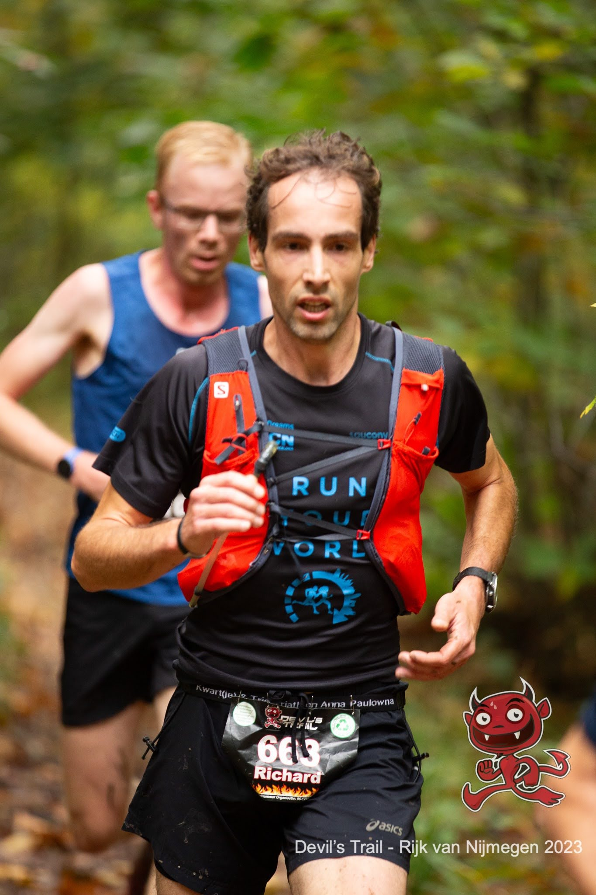

Samen met mijn broer Paul was ik bij de Devil’s trail Rijk van Nijmegen. Voor de race zaten we in de auto, we waren vroeg en het was niet al te best weer, een beetje vooruit te kijken op de race. Op een gegeven moment ging het over uitlopen, en toen kwam de uitspraak finishes count van Jim Walmsley te spraken. Dit zegt hij na zijn eerste 100 mile finish, waarbij hij de race leidt, verkeerd loopt na 90 mijl, verdwaald maar volhard en de weg weer vindt. Uiteindelijk bereikt hij mentaal uitgeput de finish uren achter de winnaar, maar kijkt hij toch op een positieve manier teruig op de race[^1]. Finishes count een goed motto en ik zou er - op een heel bescheiden manier - nog een keer aan terugdenken.
De start is 25 minuten uitgesteld omdat niet alle startnummers op locatie waren. Maar om 11.40 start dan toch de 33km race. Vier weken eerder was ik gedeeld tweede bij de Devil’s trail op de Utrechtse heuvelrug, en ondanks dat deze race overwegend in het teken staat van de voorbereiding op Olne-Spa-Olne heb ik toch besloten ook hier voorin mee te gaan en gewoon te kijken waar het schip strand. De start is vrij rap en na twee kilometer lopen we nog met een groepje van zes. De volgende kilometer loopt af en gaat nog sneller dus ik ben benieuwd of dit de hele race zo door zal gaan, vast niet. Op de stukken omlaag merk ik dat ik moeite heb om de eerste in het groepje bij te houden. Zodra het dan weer een beetje vlak is loop ik het gaatje weer dicht. Zal gebrek aan techniek en durf zijn met naar beneden lopen. Na een paar kilometer volgt de Duivelsberg, het zwaarste klimmetje van deze trail, en hier merk ik dat ik omhoog wel heel makkelijk meekom. Sterker nog, het lijkt wel alsof ik gewoon een beetje herstel. Dat voelt goed. Nog een paar kilometer verder wordt er iets versneld en beginnen er wat gaatjes in het groepje te komen. Ik ga met de eerste mee, even later sluit nog iemand aan en dan zijn we ineens los met zijn drieën. Leuk, het gaat weer om de knikkers.
Na ruim 10km verlaten we omgeving van de Duivelsberg, steken de weg over en beginnen aan de tweede grote lus richting Mook. Ik ken de omgeving hier goed, ben in de buurt opgegroeid en heb er vroeger veel op het MTB parcours gereden. Bij de Nijmeegsebaan staat de tweede drankpost ik stop niet maar de andere twee lopers stoppen wel. Degene die het meest op kop loopt is een Belg en die vraagt of ze hier geen bekers hebben, maar die moest je zelf meenemen (het is een bekerloos evenement) dus ik ben bang dat hij de rest van de race zonder drank zit. We lopen zo een paar kilometer door en ik kijk ernaar uit dat we alweer bijna op de helft zitten, aftellen is altijd fijn. Ik volg en zit wel goed. Maar dan is er opeens een schreeuw. Vreemd. Ik kijk voor de zekerheid op mijn GPS horloge en zie op de kaart: nog +/-3km te gaan. Dat kan niet kloppen! We moeten fout zitten, maar overal staan pijlen. Ik zeg tegen mijn twee medelopers dat we verkeerd zitten, maar die lijken daaraan te twijfelen. Ik weet het alleen zeker en uiteindeijk haalt het derde lid van onze groep op mijn verzoek mijn telefoon uit mijn racevest. Ik zoek snel naar de route en dan zie ik wat er fout is gegaan. We hadden een heel stuk terug linksaf gemoeten, maar zijn daar rechtdoor gelopen. Na 200m volgde weer een pijl naar rechts, dachten wij, maar dit bleek een pijl voor de terugweg. De heen en terugweg lagen hier gewoon heel dicht bij elkaar. We besluiten door te lopen, komen weer bij de Nijmeegsebaan, en mengen ons weer tussen de andere lopers. Ik loop trouwens nog met mijn telefoon in de hand, dus ik vraag of iemand die terug wilt stoppen achterin mijn racevest. Gelukkkig wil die derde jongen dat doen.

En dan begint het mentale spelletje. Je moet jezelf weer opnieuw opladen. Ik kijk op mijn horloge en zie je dat we nog 19km moet lopen. Ik was juist zo blij dat we bijna op de helft waren.. We hadden al uitgerekend dat de extra lus 2 a 3km was (het bleek 2.7km), dus de knikkers zijn wel verspeeld en er zitten heel wat mensen voor ons. Ik denk terug aan finishes count. Stoppen is sowieso geen optie maar hoe je de race vervolgt heb je ook zelf in de hand. We lopen eerst nog met zijn drieën. Alleen na een paar kilometer geeft de Belg er de brui aan, die roept wat en loopt rustig de race uit. De derde loper (die mijn telefoon pakte) trekt nog aardig door en ik moet hem laten gaan. Ik besluit mijn eigen tempo aan te houden, en het maar positief in te zien: met de extra kilometers is het toch maar mooi net iets meer dan de helft van de afstand voor Olne. Dat tempo vasthouden gaat goed. Gestaag worden er weer mensen ingehaald. Kilometers lang zie ik op de rechte stukken ook mijn eerdere metgezel nog voor mij maar op een gegeven moment raak ik die langzaam kwijt. Uitlopen, en wellicht een top tien plek, dat is het nieuwe doel. Vlak voor een U-bocht zie ik dan toch weer even kort mijn oude metgezel, dus zoveel terrein verlies ik ook weer niet dat geeft weer wat moraal. En zo vervolgd zich de race, op een gegeven moment loop ik ook tussen de 11 en 22km lopers en dan weet ik helemaal niet maar waar ik mij bevind. Tot ik twee kilometer voor het einde, bij de drankpost op de Nijmeegsebaan nota bene, mijn oude metgezel weer inhaal. Het laatste stukje gaat lekker en na ruim 2u34min kom ik over de finish, ruim 7 minuten achter de winnar als 9e (8e man), en als eerste van ons oorspronkelijke kopgroepje.
Paul (die de 22km liep) is ook al binnen en samen drinken we een alcoholvrij oersoep. Tijdens de race hadden we prima weer, maar net als voor de race wordt het nu weer minder. Ik heb een goed gevoel, jammer van het foutlopen maar ik ben blij met hoe de wedstrijd verder is verlopen en hoe ik mij over de teleurstelling heen kon zetten. Dat was niet een goede training qua kilometer maar ook mentaal. Wel heb ik een aantal dingen geleerd. Één loop niet zomaar achter je medelopers aan die kunnen ook fout lopen. En twee: zet überhaupt gewoon de routekaart aan op je GPS horloge dat had het foutlopen wel voorkomen.
Voetnoten
[^1] Found on 49